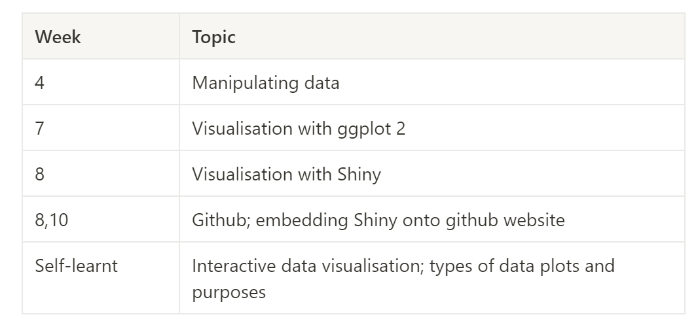

Diary Entry
About me
Welcome to my website! My name is Kiera and I am a student taking NM2207. A current Year 2 Undergraduate student, I am pursuing my major of Communications and New Media, with a minor in Business Management and Interactive Media Development.
Diary Entries
Throughout developing this data story and this website, I have been documenting my experiences and thought process through simple diary entries. Published on 15th April 2024, this website has been undergoing development since 15th March 2024 – a whole month! Let’s take a look:
Diary Entry 1 (15/03/2024)
What is the topic you have finalized? (Answer in 1 or 2 sentences)
I have decided on the topic of rock music, and want to analyse how over time, the popularity of different rock music may be defined by different metrics such as danceability or acousticness. This may reflect the trends of the music scene and how different styles are regarded as popular during different periods of time.
This would fall under the type: change over time.
What it does: Uses a chronology to illustrate a trend.
Discussions it starts: Why did this happen, or why does it keep happening? What can we do prevent or make this happen?
What are the data sources that you have curated so far? (Answer 1 or 2 sentences).
I have curated the data source called “History of Rock (1950-2020)” by user Lucas Zamora from the website Kaggle.
Diary Entry 2 (22/03/2024)
Instead of on the topic of rock music as previously indicated in last week’s diary entry, I have decided to change my database to “Laptop Prices Based on its specifications”, uploaded onto kaggle by user Abdul Rehman Amer. This is because I did not know that we had to justify the importance of our question with evidence :( As such: (1) What is the question that you are going to answer? What is the correlation between laptop specifications and pricing information, and which specifications are most strongly associated with the price of laptops? (2) Why is this an important question? According to UNiDAYS, 97% of students said that their laptop was crucial to their course success. Before buying their laptop, the same survey showed that 89% of students do their research before purchasing. They also demonstrate price consciousness in their laptop purchases, with 92% using a discount code regularly, and one in three students being willing to wait for a discount to purchase the technology they want. As such, identifying which laptop specifications correlate with higher prices will allow students to plan their purchases out and better understand the tradeoffs they have to make financially should they desire specific components, and how much they can expect their desired laptop specs to cost typically, without being ripped off. (3) Which rows and columns of the dataset will be used to answer this question? Laptop specifications such as ScreenResolution, Inches, Cpu, Ram, Memory, Gpu, OpSys, weight, as well as Price will be used to answer this question. I faced challenges in trying to come up with a data analysis question that was not too simplistic, and to come up with justifications for the question I wish to answer. I borrowed the help of some data science majors to help me articulate the questions I wished to ask using more precise and accurate vocabulary, and was able to find an adequately relevant data set to use.
Diary Entry 3 (29/03/2024)
(1) List the visualizations that you are going to use in your project (What are the variables that you are going to plot? How will it answer your larger question? Why are these the best visualizations to convey your story?)
I will use scatter plots to visualize the relationship between each specification (CPU, RAM, GPU, etc) and laptop prices. This will identify any trends or patterns that may exist. I will then use boxplots to compare the distribution of laptop prices across different categories of specifications (such as diff types of CPUs, GPUs, etc). For simplicity’s sake, I will consider doing this for only the more common types of CPUs and GPUs. This will show how the different specifications will impact the prices of laptops. While scatter plots show the strength and direction of the relationship, box plots show the variation in price based on different specifications.
(2) How do you plan to make it interactive? (What features of ggplot2/shiny/markdown do you plan to use to make the story interactive)
I will use Shiny for interactive elements, including sliders, dropdown menus, etc. This will let users filter the data they want based on specific specifications (like by CPU brand or GPU brand) I will use ggplot2 to create the output of plots and graphs, based on the user’s input. The plot should update automatically to show the effect of the specification on laptop prices. E.g. if the user wishes to find out the different CPU’s effect on laptop prices, they can filter the CPU and price data to generate the relevant plots that can visualise this relationship.
(3) What concepts incorporated in your project were taught in the course and which ones were self-learnt? (Create a table with topics in one column and Weeks in the other to indicate which concept taught in which week is being used. Leave the entry of the Week column empty for self-learnt concepts)

Include the challenges and errors that you faced and how you overcame them.
I think it was challenging to find out which tools I can use. The course introduced a very overwhelming number of types of tools and packages for different purposes, and as a beginner to both data and code, I was confused as to which data plot to use that ought to demonstrate certain relationships, as well as how to code that out. While I am familiar with individual components of achieving the website or interactive feature, e.g. how to upload a dataset, how to allow users to filter it, and how to generate the dynamic plot (as in week 8), I think I struggled in articulating its function in the grand scheme of my ideas. I overcame this by looking through past material and collating a list of most attractive or useful features, then putting together a simple plan of what to do with these ideas.
Diary Entry 4 (14/04/2024)
Write a short report on the following:
Reflect on your experience doing the project using R
What have you learned in NM2207, and how can that be helpful in your future career?
Try to identify use-cases within your specialization and future industry that you might benefit by using R.
This project was undeniably difficult. As a completely new language and the first course I took regarding coding, it was a steep learning curve as someone who had little experience and aptitude for coding and data analysis. I struggled with imposter syndrome because I felt like I appeared to know what I was doing, but in reality I struggled with fully understanding what I was executing, despite the hand-held instructions through video-recorded lectures.
However, I have learnt through this experience that coding is not so inaccessible to non-computer science students. Although I would not call myself an expert, I am proud that I can read R code semi-well, and am able to articulate my concepts through plots and diagrams. While I may not be required to code in the future from scratch such as in this project, perhaps reading R code and understanding how data can be represented will play a big role in my future career. Some data and computational literacy (aha! course name drop) is definitely useful in an era of technology and data.
As a CNM student, I aspire to break into communications or marketing roles in industries such as e-commerce! This skill set will be especially helpful if I have to make decisions off a data set. I am now confident in saying that in a scenario where I am assigned to unpack and decipher a raw csv file, I do have some basic skills in R that can accomplish such a task. For example, data such as tracking the popularity of an e-commerce product through clicks and purchases may come in the form of a csv file! I may be tasked to decipher the csv file in order to decide which product to emphasise marketing efforts for, or which product are successful and how to replicate such success. For example, there may be products that are popular enough for a recorded high number of click-ins, but comparatively little check-outs. These products can only be articulated through visualisation of a dataset, which will help me understand the next course of action in marketing it.